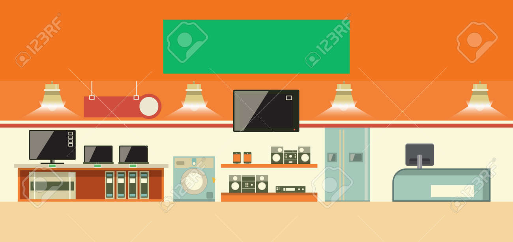

La electrónica es la disciplina tecnológica orientada a manipular y controlar la corriente eléctrica para procesar información, transmitir datos y ejecutar comandos. Se trata del pilar sobre el cual se sostiene gran parte de la tecnología que utilizamos a diario.
La presencia de la electrónica abarca múltiples áreas estratégicas:
·Telecomunicaciones: Permite el envío de información mediante frecuencias de radio, fibra óptica y sistemas satelitales en teléfonos y redes de internet.
·Sistemas de Cómputo: Es la base de procesadores, memorias y tarjetas madre en ordenadores y tabletas.
·Automatización y Robótica: Posibilita el control de maquinaria industrial, drones y sistemas de navegación vehicular.
·Dispositivos Domésticos: Regula el funcionamiento de electrodomésticos, televisores y equipos de sonido.
Según la forma en que se procesan las señales eléctricas, la electrónica se divide en:
·Electrónica Digital: Trabaja únicamente con estados discretos (el sistema binario de 0 y 1). Ofrece gran precisión y es la base de la informática moderna.
·Electrónica Analógica: Maneja señales continuas que varían gradualmente en el tiempo, como las ondas de audio, señales de radio o lecturas de temperatura.
Un circuito electrónico requiere diversos elementos para guiar y modificar el comportamiento de los electrones:
Trabajo realizado por Martina Seri de 4B